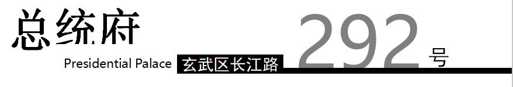
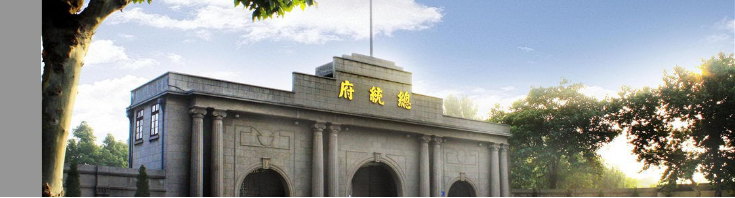
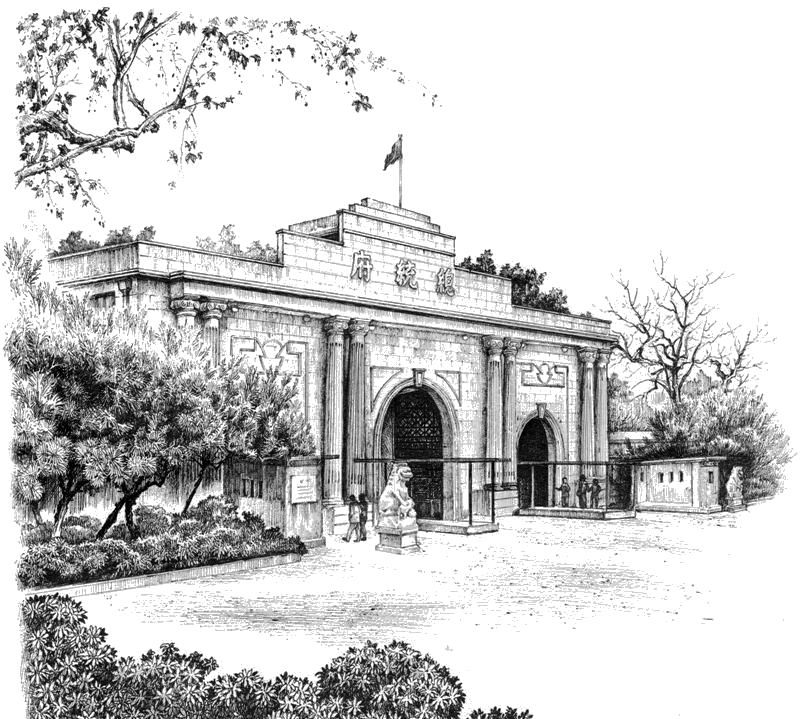

南京总统府是中国近代建筑遗存中规模最大、保存最完整的建筑群，也是南京民国建筑的主要代表之一，中国近代历史的重要遗址，现已辟为中国近代史遗址博物馆。

南京总统府建筑群占地面积约为5万余平方米，既有中国古代传统的江南园林，也有近代西风东渐时期的建筑遗存，至今已有600多年的历史。其历史可追溯到明初的归德侯府和汉王府，清代被辟为江宁织造署、两江总督署等。1912年1月1日，孙中山在此宣誓就职中华民国临时大总统，辟为大总统府，后来又为南京国民政府总统府。现已列为全国重点文物保护单位，国家AAAA级旅游景区。
门票价格：40元/人次（学生及60岁以上老人半价，70岁以上免费）
开放时间：8:30～17:00（每周一全天闭馆）
适宜游玩季节：四季皆宜
